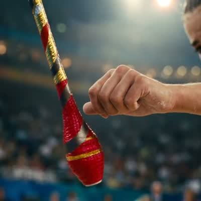
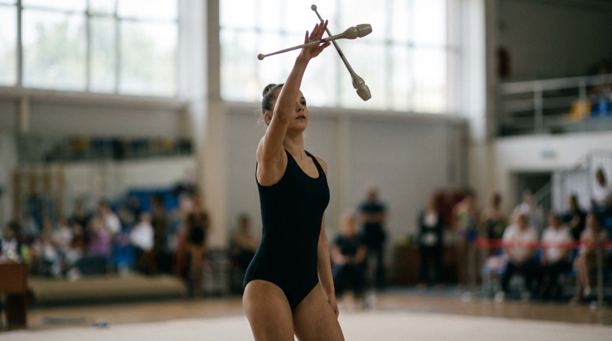
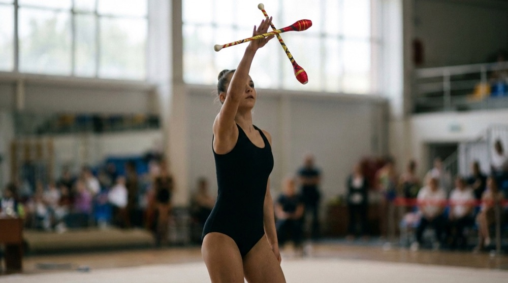

Artifact · SM_RV_8

One of the pair of clubs used by the Hellenic National Team's rhythmic group at the Sydney 2000 Olympics - per the Museum, the specific club that was dropped during the team's first routine, costing points and placing them third: Greece's first and only Olympic medal in rhythmic gymnastics. The object bears the autograph of team member Eirini Aindili.
The proof — same prompt, with and without the collection
clubs crossed overhead · the only difference between the two images is the museum digitisation attached as reference.

WITHOUT: the AI invents a generic object.

WITH: the real object survives, invariants gated.
Every video this artifact appears in
A gymnast's hand closes below the falling club.
The assembled 5-shot scene.
The five shots.
Four real artifacts, one ritual arc: the breath, Tentoglou's shoes, the 1976 belt, the Sydney clubs, and the kotinos lowered onto a bowed head. The two ink closeups are DETERMINISTIC inserts — computed camera moves over the certified digitisations, so the handwriting on screen is the athlete's REAL ink (legible because it is true; only generated text can forge). The failed generative take is preserved beside it: it forged the same ink, and that comparison is the product argument in 30 seconds. First seedance-25 production prompt; the 30s platform cap confirmed the same afternoon for 0 credits.
REEVALUATE · every claim traceable to a ledger · full archive in the working room